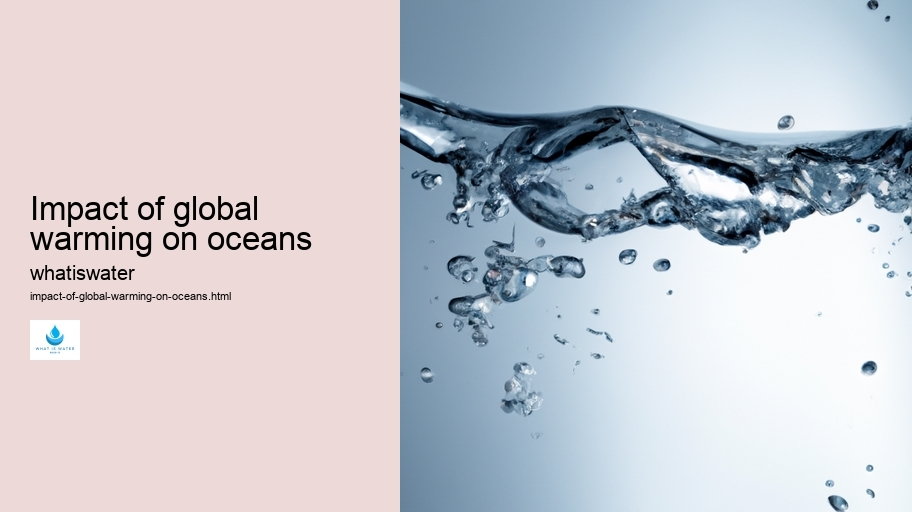

Hydrological Cycle
Hydrological Cycle
Evaporation and transpiration
Condensation and cloud formation
Precipitation and rain patterns
Surface runoff and river systems
Groundwater flow and aquifers
Snowmelt and glacial processes
Water storage in oceans lakes and reservoirs
Soil moisture and infiltration
Water balance and budgeting
Human impact on the hydrological cycle
Marine Ecosystems
Marine Ecosystems
Coral reefs and their biodiversity
Mangrove forests as coastal protectors
Ocean currents and climate regulation
Deepsea habitats and extremophiles
Intertidal zones and estuarine ecosystems
Marine food webs and trophic levels
Freshwater Ecosystems
Freshwater Ecosystems
Conservation efforts for marine species
Marine biogeochemical cycles
Impact of global warming on oceans
Water Resource Management
Water Resource Management
Rivers streams and creeks ecosystems
Lakes ponds wetlands habitats
Biodiversity in freshwater environments
Aquatic plants role in oxygenation
Freshwater fish species diversity
Invasive species impact on freshwater systems
Pollution threats to freshwater sources
Conservation strategies for freshwater biomes
Role of wetlands in flood control
Importance of riparian buffers
Cultural Significance of Water
Cultural Significance of Water
Sustainable water use practices
Desalination technologies for fresh water supply
Wastewater treatment processes
Rainwater harvesting techniques
Management of water during drought conditions
Transboundary water resource politics
Infrastructure for water distribution
Agricultural irrigation efficiency
Urban water demand management
Impact of climate change on water resources
About Us
Contact Us

Impact of global warming on oceans
>
H2O
Global warming, a consequence of excessive greenhouse gas emissions primarily from human activities such as the burning of fossil fuels and deforestation, has far-reaching implications on our planet's oceans.
Water Quality
These vast bodies of water, which cover more than 70% of the Earth's surface, are not immune to the shifts induced by climate change.
Rivers and Lakes
Instead, they absorb much of the heat and carbon dioxide generated by these activities, leading to various alterations in their physical properties and ecosystems.
The first significant effect is the rise in sea temperatures.
Aquaculture
Oceans act as a colossal heat sink; however, this increasing temperature disrupts marine life profoundly. Species adapted to stable thermal conditions find themselves under stress or forced to migrate to cooler waters.
H2O
This movement can result in mismatches within food webs as predatory species may not follow their prey due to differing migration rates or patterns.
Furthermore, warmer oceans expand through a process known as thermal expansion. This phenomenon contributes substantially to sea-level rise, posing a direct threat to coastal communities and habitats. The inundation of saltwater into freshwater systems can lead to soil salinization, affecting agriculture and drinking water supplies.
Another consequence is ocean acidification.
Impact of global warming on oceans - Water Quality
Hydrology
Droughts
Water Efficiency
As seas absorb CO2 from the atmosphere, it reacts with seawater forming carbonic acid which lowers pH levels.
Waterborne Diseases
Acidic waters hamper calcifying organisms like coral reefs and shellfish by dissolving calcium carbonate structures essential for their survival. Coral bleaching events become more frequent as stressed corals expel symbiotic algae needed for nourishment.
Additionally, melting ice caps and glaciers further elevate sea levels while altering ocean currents that regulate global weather patterns. For example, changes in the Gulf Stream could trigger severe weather conditions across Europe and North America.
Lastly, declining oxygen levels—known scientifically as hypoxia—are another critical issue related to global warming's impact on oceans.
Hydrology
Wetlands
Water in Culture and Religion
Warmer waters hold less dissolved oxygen necessary for aquatic life; combined with nutrient runoff causing eutrophication (excessive algae growth), vast 'dead zones' devoid of life have emerged globally.
In conclusion, global warming fundamentally restructures our oceanographic landscapes with repercussions we are only beginning to comprehend fully. Immediate action towards reducing greenhouse gases is imperative if we wish to safeguard marine environments crucial for biodiversity conservation and humanity's well-being.
Impact of global warming on oceans - Water Quality
Wetlands
Water Quality
Aquaculture
Water Cycle
Hydrology
Hydrological Cycle
Check our other pages :
Agricultural irrigation efficiency
Infrastructure for water distribution
Lakes ponds wetlands habitats
Urban water demand management
Impact of climate change on water resources
Frequently Asked Questions
How does global warming affect ocean temperatures?
Global warming leads to an increase in ocean temperatures due to the excess heat absorbed by the oceans from the enhanced greenhouse effect. Warmer oceans can disrupt marine ecosystems, lead to coral bleaching, and affect fish and plankton populations that are sensitive to temperature changes.
What is ocean acidification and how is it linked to global warming?
Ocean acidification refers to the decrease in pH levels of ocean water caused by the absorption of carbon dioxide (CO2) from the atmosphere. As CO2 emissions rise due to human activities, more CO2 gets dissolved in seawater, forming carbonic acid and lowering the pH. This process can harm shell-forming organisms like corals and mollusks, as well as disrupt overall marine life balance.
How does global warming contribute to sea-level rise?
There are two primary ways that global warming contributes to sea-level rise. Firstly, thermal expansion occurs because water expands as it warms up. Secondly, melting glaciers and ice sheets add freshwater into the oceans. Both effects result in higher sea levels, which can lead to coastal erosion, flooding, and loss of habitat for plants, animals, and even humans.
What impact does global warming have on ocean currents?
Global warming can alter major ocean currents by changing wind patterns and by affecting the density gradients in seawater caused by temperature and salinity variations. These changes may disrupt established marine migration routes, nutrient cycling, weather systems such as monsoons or hurricanes; they may also influence climate patterns globally by altering heat distribution across the planet.